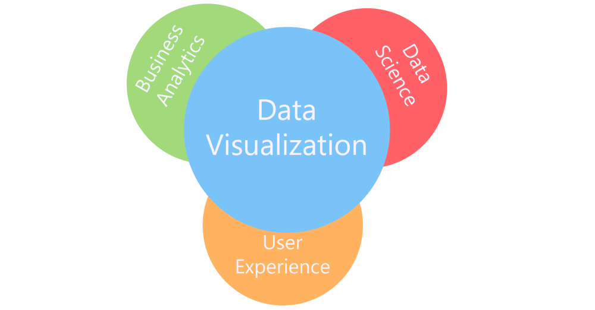

This project provides informative insight to the visualization of data for a top brand of a global lighting and entertainment manufacturer. As the mananger of the website including all product, dealer and reporting this allows fast and accurate reporting to brand management.
In this project, the team has implemented the following for our visualizations:
- Created & Configured an API with Google Analytics
- Created & Configured an API with Mapbox for plotting
- Created & Exported several datasets for various types of visualizations
- Setup database schema and imported documents
- Configured Flask and SQLAlchemy to export from the database
- Setup Python Flask RESTful API
How many Visitors visit the website?
- This visualization shows realtime visits, including weekly & yearly comparisons, using the power of chart.js with an API. Check it out!
What Product Pages are Visited Most?
- This visualization shows the amount of pageviews for the top 10 products on the website since January 1, 2020. Check it out!
Where are the Dealers who Sell the Product?
- This interactive visualization plots each domestic dealer in the United States. Check it out!
How are the Dealers' Websites representing the Top Product?
- This interactive visualization shows the results of web scraping dealers' sites. Check it out!